Introduction to Generative AI for Education
Welcome to Introduction to Generative AI for Education!
Essential links:
What's this course about? Why does this course exist? In 2026, in some sense, we no longer need a course introducing us to Generative AI - for education or for anything else. It might even seem, for those of us following the latest developments of OpenAI's ChatGPT, Anthropic's Claude, or new agentic systems like OpenClaw, as though we are even reaching the point of singularity in the field of education. A point at which, at least for self-paced adult learners, the role of traditional education might be receding into the shadows of tradition itself.
This course will contest this characterization. But in 2026 it can seem difficult to how to approach a technology that has become so popular precisely because it is "professorial". The approach we will take will lean in on the idea that "generative AI" is an object we need to approach from several perspectives or lens. Accordingly, each week after this one will outline one of these perspectives - historical, technological, practitioner, critical, pedagogical and futurological. These lens do not comprise a single coherent doctrine of AI - and I will be encouraging you to notice and document the tensions between them. But they will help us move away from can at times appear narrow discourses of unbridled hope or hopeless fear. By the end of the course, I am hoping these different perspectives will each introduce AI in a way that adds something to your own theory and practice.
For this week there are no readings. We will be introducing ourselves - sharing something of our experiences as researchers and practitioners in AI – and I will also discuss the assessment and structure for the course in more detail. Look forward to seeing you next week!
Additional comments:
The large number of students here already signals a strong interest all the same. It is as though despite the vast volumes of materials about Generative AI - much generated of course by generative AI itself - there is still something we wish to get out of active discussion of the topic.
The course was first run by me last year, and the approach will be largely the same. However I have expanded what was 90-120 minute sessions into a full 2 hours 50 minute session, as I felt we were frequently short of time for discussions and practice. So nominally we'll blocking out the time if we need it - with a 10 minute break roughly half way through.
Each session, including today, will be run as a workshop - a mix of theory / lecture, discussion and practice.
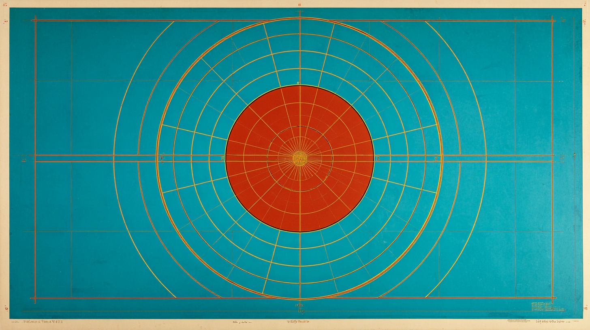
Course Description
Explores applications of Generative AI in Education. Topics include: AI predecessors (symbolic, data-driven, and connectionist AI); Large Language Models and statistical approaches to meaning in text; machine learning (supervised, unsupervised and reinforcement learning, including deep learning and neural nets); chatbot architectures and prompt engineering; fine-tuning for domain-specific applications; multimodal AI; guardrails (including managing AI bias, “jailbreaks,” “hallucinations,” explainability, intellectual property, privacy and security); and applications of Generative AI in education
All required material (video lectures, readings etc.) will be provided to students, as per the tentative schedule below.
From the course description: https://ldlprogram.web.illinois.edu/overview/course-descriptions/
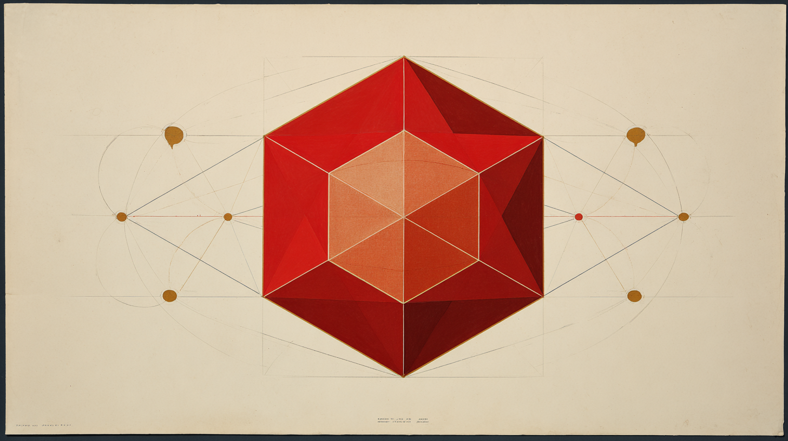
Learning Objectives
Accordingly, much of our focus in these sessions will be on design-style workshops - thinking through the readings and applying them to a rolling brief of our intervention.
Contact Details
Dr Liam Magee
Email: lmagee@illinois.edu
No office hours or TA; can meet by appointment. Will aim to be responsive.
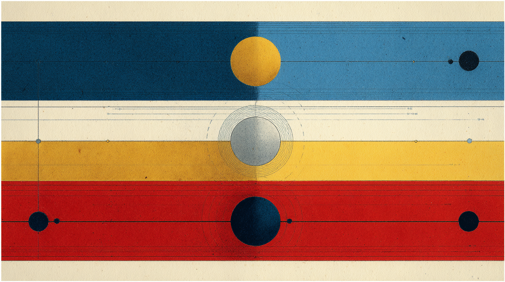
Course Information
Weekly Workshops: Mondays, March 23 to May 4, 5:30 - 8:20
Each session: likely 2x
In the spirit of our approach: intervene! Ask questions, make comments, correct, provoke (to a point)!
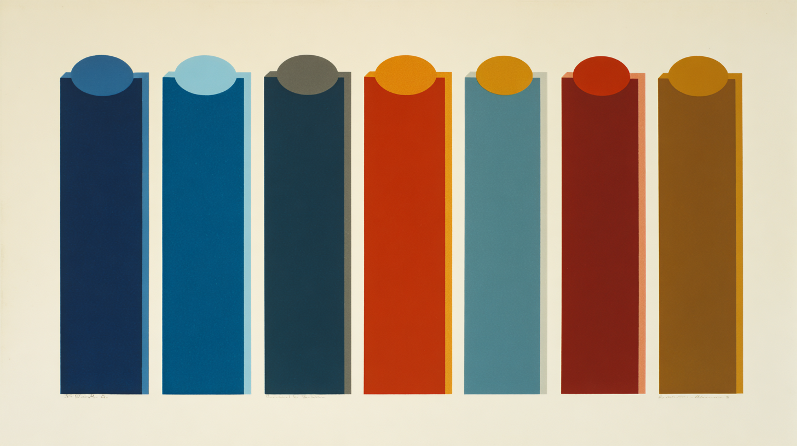
Structure
Built around 6 weekly themes:
March 23 - Week 1: Introduction
March 30 - Week 2: Historical Lens
April 6 - Week 3: Technological Lens
April 13 - Week 4: Practitioner Lens
April 20 - Week 5: Critical Lens
April 27 - Week 6: Pedagogical Lens
May 4 - Week 7: Futurological Lens
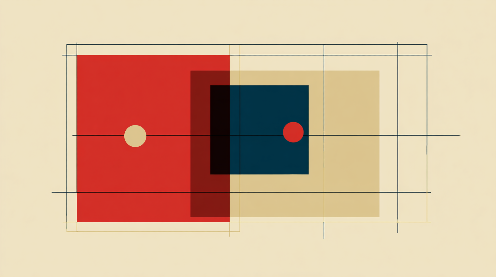
Assessment
Formative Assessment Building: Weekly Tasks
All assessments are due Sunday midnight CST of the following week. Six weekly tasks x 5% per cent = 30% overall grade. Each response builds towards the final assessment. Aim to write 300-500 words per week.
Week 2 (due April 5 11:59PM): Brainstorming an "Intervention"
Indicative Questions: what about the history of AI has interested you? Are you surprised with where things have arrived at? What is it you feel most needs saying about AI today?
Week 3 (due April 12 11:59PM): Storyboarding
Indicative Questions: What about the technical foundations might be important to understand? How much does the non-expert need to know? What format & genre are you thinking about?
Week 4 (due April 19 11:59PM): Practicing AI
Indicative Questions: what parts of AI interest you most? Text scaffolding? Code generation? Image / video / music production? Having a "guide"? What are emerging best practices for AI use? and what works for you?
Week 5 (due April 26 11:59PM): Developing an Edge
Indicative Questions: what criticisms of AI resonate for you? Are you optimistic some / all can or have been addressed? What, conversely, that no overnight AI update is likely to "fix"? And how will you communicate this in your intervention?
Week 6 (due May 2 11:59PM): Consider the Teaching "Moment"
Indicative Questions: what would you want others to know about AI? Is your lesson direct (e.g. "here's the lesson...") or indirect (e.g. "something to think about")? What about this could you carry across to a classroom, and at what levels?
Week 7 (due May 9 11:59PM): Showcasing the Intervention
Indicative Questions: how did others respond to your intervention? What worked, and what needs worked? What does your intervention teach us about the future? What did you learn yourself?
All assessments are due Sunday midnight CST of the following week. Six weekly tasks x 5% per cent = 30% overall grade. Each response builds towards the final assessment. Aim to write 300-500 words per week.
Week 2 (due April 5 11:59PM): Brainstorming an "Intervention"
Indicative Questions: what about the history of AI has interested you? Are you surprised with where things have arrived at? What is it you feel most needs saying about AI today?
Week 3 (due April 12 11:59PM): Storyboarding
Indicative Questions: What about the technical foundations might be important to understand? How much does the non-expert need to know? What format & genre are you thinking about?
Week 4 (due April 19 11:59PM): Practicing AI
Indicative Questions: what parts of AI interest you most? Text scaffolding? Code generation? Image / video / music production? Having a "guide"? What are emerging best practices for AI use? and what works for you?
Week 5 (due April 26 11:59PM): Developing an Edge
Indicative Questions: what criticisms of AI resonate for you? Are you optimistic some / all can or have been addressed? What, conversely, that no overnight AI update is likely to "fix"? And how will you communicate this in your intervention?
Week 6 (due May 2 11:59PM): Consider the Teaching "Moment"
Indicative Questions: what would you want others to know about AI? Is your lesson direct (e.g. "here's the lesson...") or indirect (e.g. "something to think about")? What about this could you carry across to a classroom, and at what levels?
Week 7 (due May 9 11:59PM): Showcasing the Intervention
Indicative Questions: how did others respond to your intervention? What worked, and what needs worked? What does your intervention teach us about the future? What did you learn yourself?
Please enter responses in the shared Google Doc. You are encouraged – but not required - to add comments to other people's responses.
Summative Term Assessment: An "Intervention"
What kind of intervention? Any of the following artefacts [1]:
And a [2] 500-1,000 word reflection / artist's statement / director's pitch / researcher's statement etc (with sources)
And a [3] critical 1,000-2,000 word "assessment" of the intervention (follows from week 7 showcase)
Week 8 (due May 16 11:59PM): Refinement, Reflection, Submission
What kind of intervention? Any of the following:
- Presentation (15-20 slides)
- A0 Conference Poster
- Research Paper
- Curriculum
- Policy Document
It should aim to integrate something of each of six “lenses” we’ve introduced in this course: historical, technological, practitioner, critical, pedagogical, futurological.
Assessment Criteria: Formative Weekly Responses
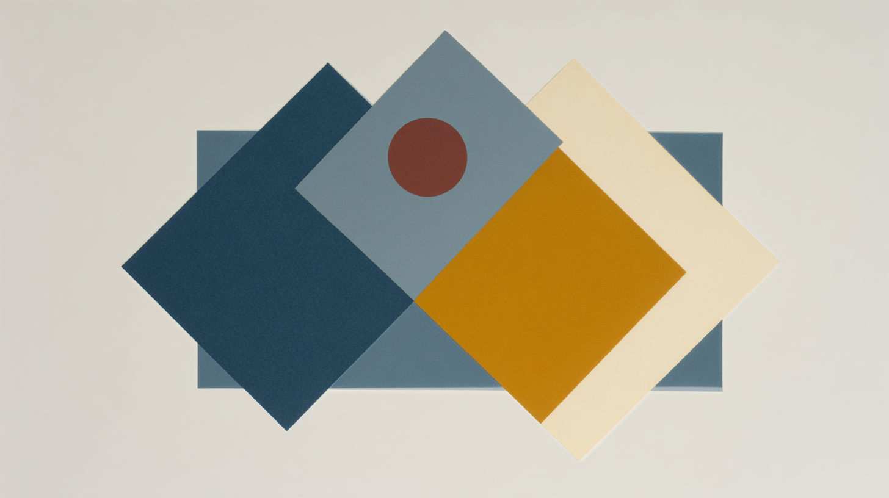
Assessment Criteria: Summative Final Assessment
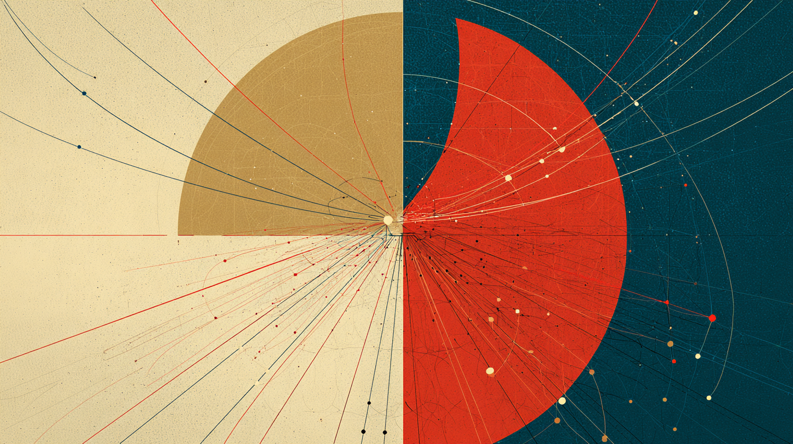
Process of submission: Why a single Google Doc?
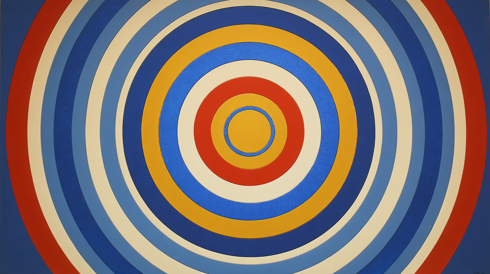
A Note on AI use for this course
AI use with acknowledgement is encouraged for the intervention artefact [1] itself. We will be discussing how this might work as we progress through the course. For weekly activities, and for reflection [2] and assessment [3] parts of the final project, it shouldn't be necessary or desirable.
A Note on Accessibility
This course is aimed at providing wide exposure to range of tools as well as readings. Parts of these tools - including these presentations - will be using AI as a way to exemplify some of what we can do with AI. That does raise issues though.
I will be checking content for WCAG 2.1 Level AA compliance, but please let me know if any materials are inaccessible.
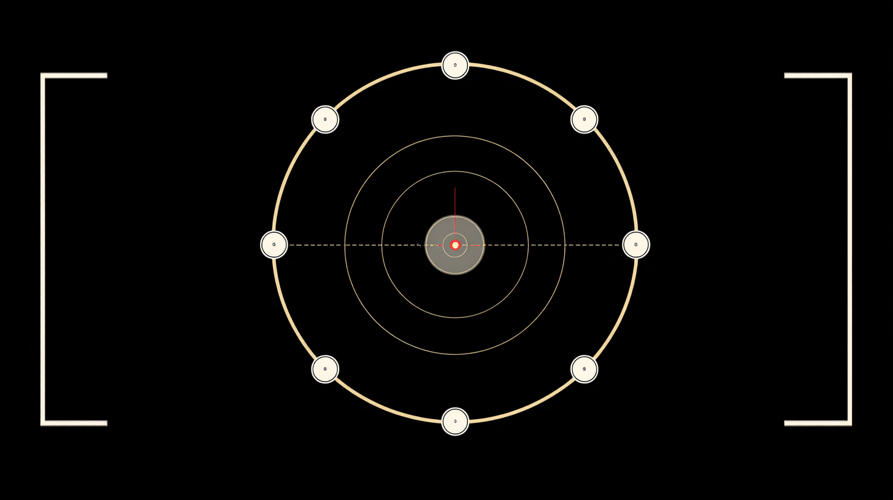
Course resources
Setting the Scene: Karpathy on Agents
Short game: Telephone-AI - in Groups
Discussion & Introductions
6 Questions - any or all of:
1. What has been your experience of generative AI in education?
2. What is your level of technical expertise?
3. What criticisms have you had of generative AI?
4. How have you applied it - in teaching or elsewhere, in professional or personal life?
5. What are your hopes and fears about the future of AI?
6. What do you think is still needed for generative AI in education today?
Resume: Lessons from the discussion?
What was the Telephone-AI question?
AI in 2026: An Opinionated Take
What's going on in the world of AI today?
AI Consolidation
Rise of open source models
Contradictory tendencies: Increasing demand...
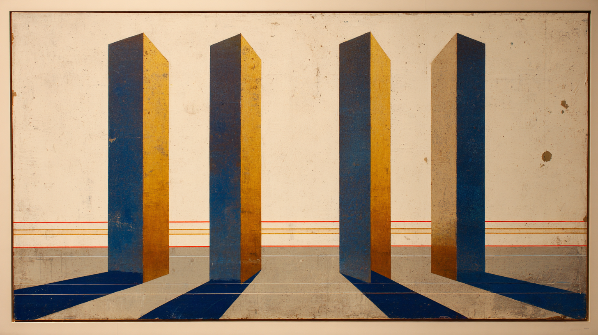
...but also:
In Workshop 4 we'll be examining criticisms of the environmental and social costs of AI. As a note for now: these differing trends make long term estimation hard to predict.
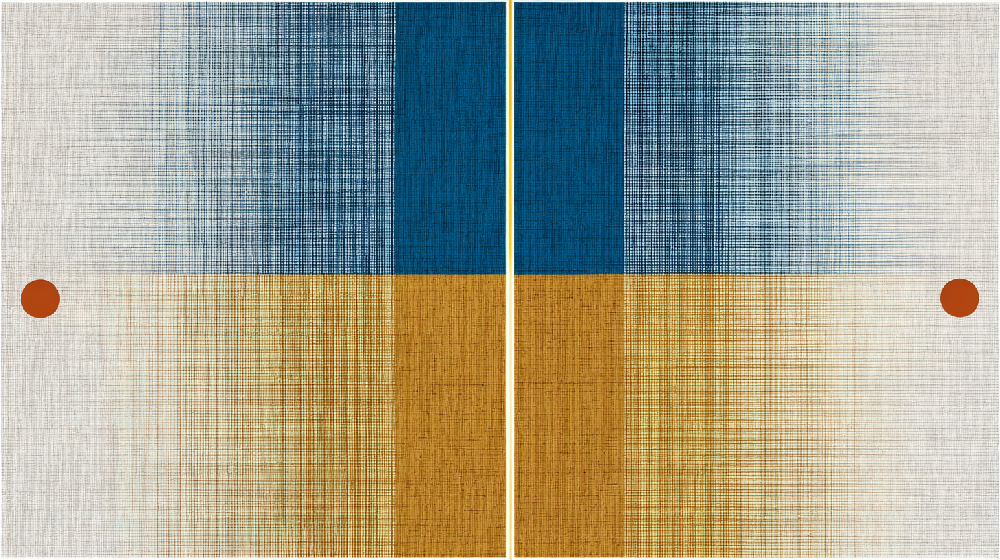
Agentive AI
Education Issues: Cons
Education Issues: Pros
However: "Bigger Picture" Issues
1. Predicted Erasure of White-Collar (Cognitive) Labor
2. What happens When AI works properly? Social media as Harbinger: Addictive, Compulsive AI; AI "Psychosis"
3. Concentration of Power: Owners of AI; Power Users of AI; The rest of us?
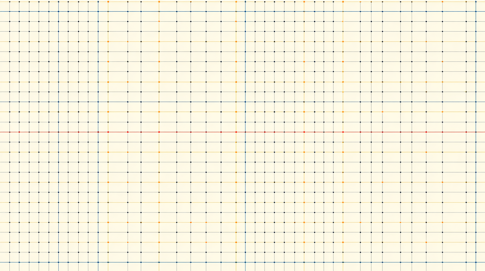
What do we need to learn now? What do we need to teach?
No easy answers.

Crisis in Higher Ed
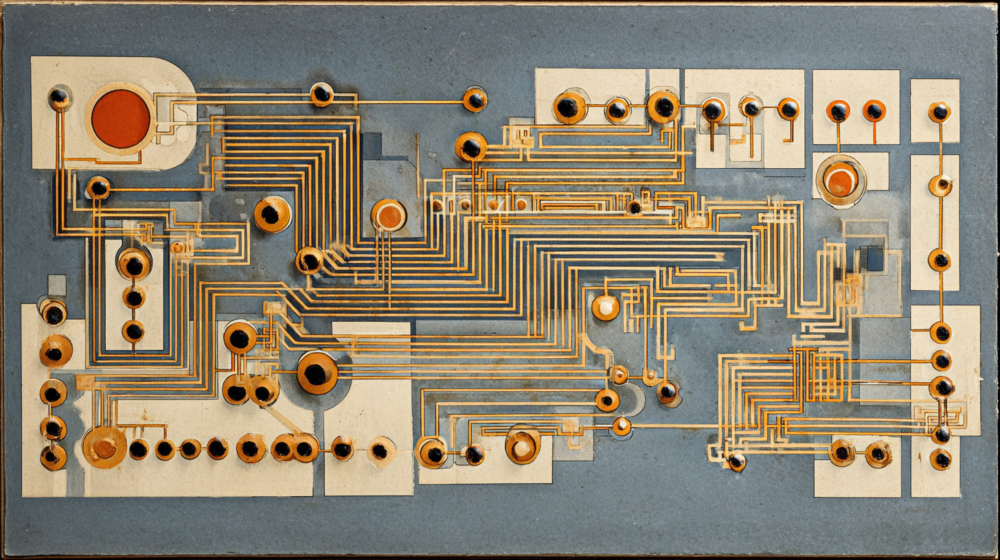
Case Study: Geist in the Machine (Magee 2026)
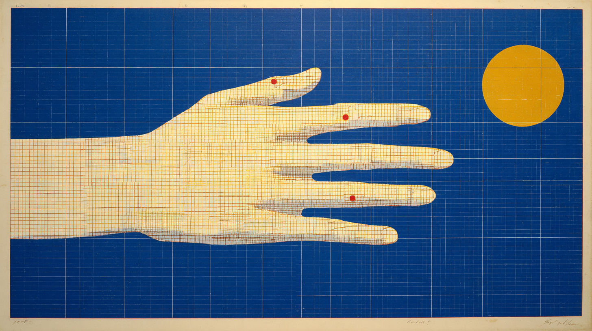
Case Study: Key Concepts
What AI can do for research
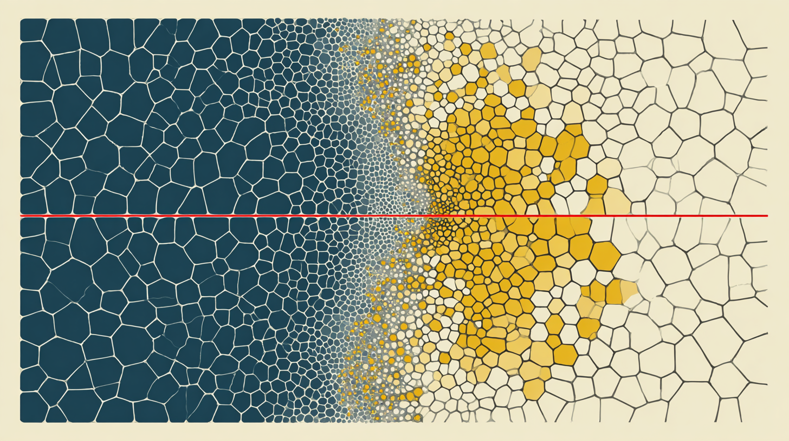
Connection to this course
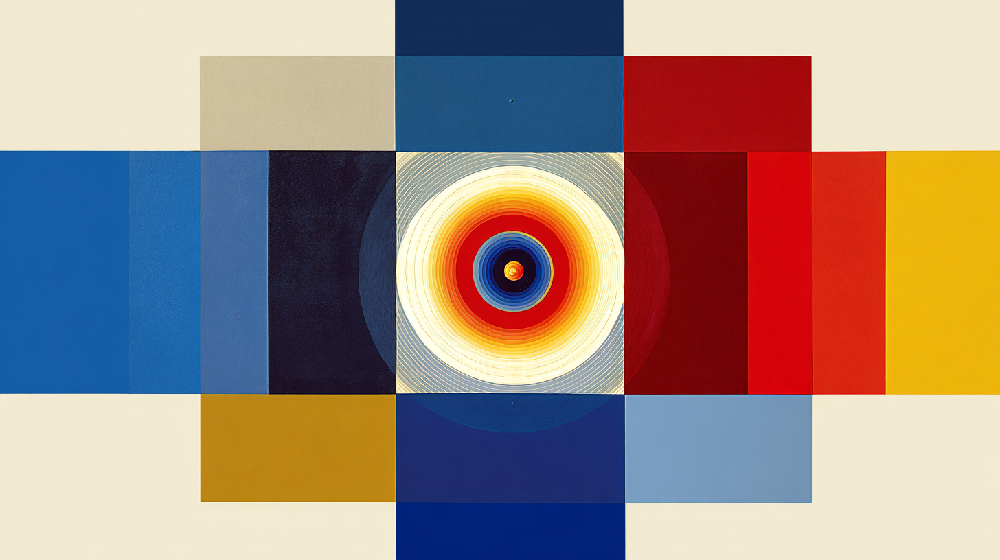
For next week: Historical Lens
Questions to keep in mind: